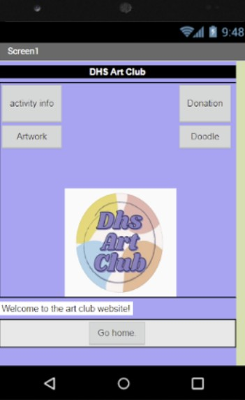
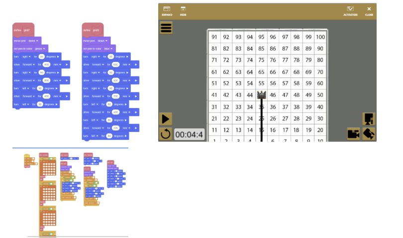
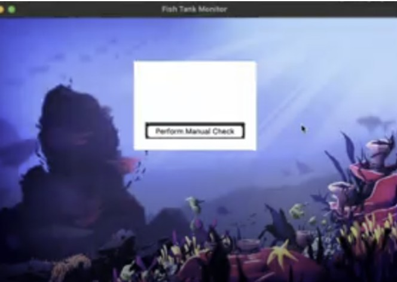
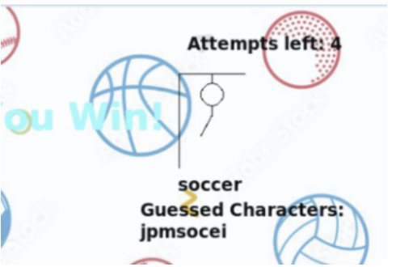
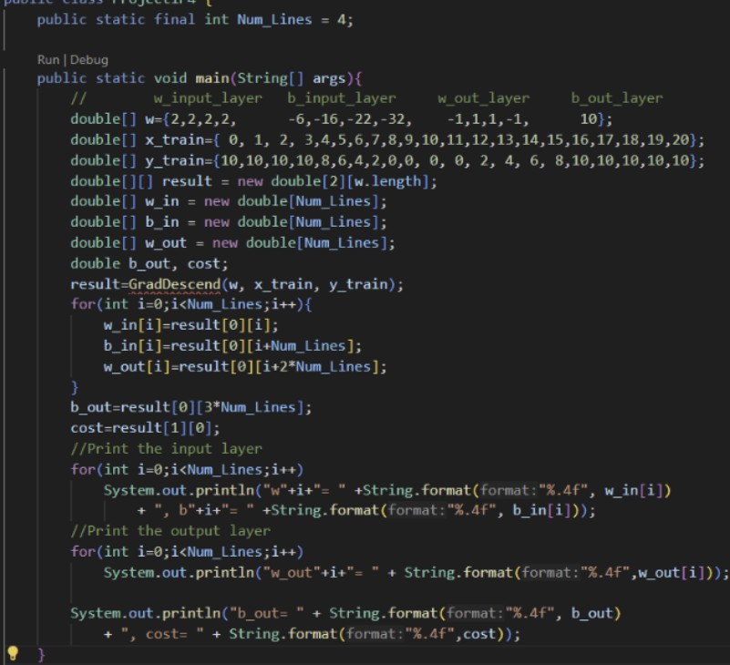
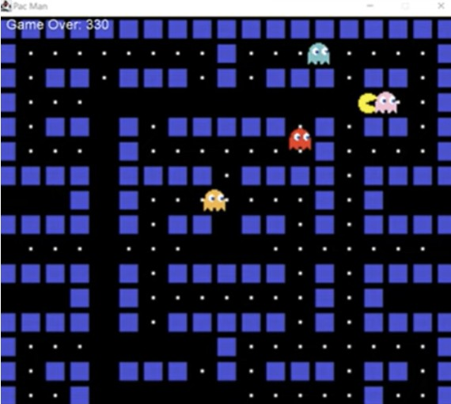
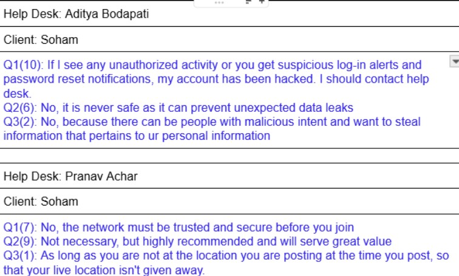
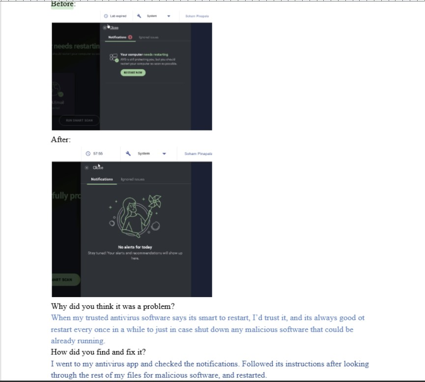

Project Showcase
Computer Science Essentials
DHS Art Club
Duration: 3 weeks Objective: Create an app based on a school club
Objective: create an app that is based on an extracurricular activity or school club The objective of Project 1.1.6 was to make an app that was based on a school club. My partner and I chose the DHS art club that showed off the club's creations and gave a place to learn about the club and donate to it. The app contains a home screen and 4 different tabs for you to select from. An activity info page, a donations page, a place to draw and make art yourself, and a place to view some of the club's artwork. My partner and I worked together on each part of this project, going part by part and maintaining documentation.

2.1.5
Duration: 1 month Objective: Create an algorithm that can navigate any obstacle grid in the shortest path
The objective we were given was to create an algorithm that would be able to traverse any grid and obstacle course and determine the shortest path it would take to get the robot from start to finish. We were given 9 different grids for our program to tackle. Our process took us outside our coding platform, making us utilize outside resources and create a system that could adapt to different situations with the same code. This project was very difficult, and it most importantly taught me about patience and how to put my head down and troubleshoot, whether pr not it takes hours of debugging. Effective communication streamlined the process and was something I had gotten better at from past projects. This project gave me great experience for what it might be like in the real world when we are put in very tricky situations. We also kept a thorough documentation.

AP Computer Science Principles
pHishy Tank
Duration: 2 weeks Objective: Security analysis for a client
Objective: We were asked to perform an analysis for a client who has some security issues on their device. This was the first time I had a project regarding fixing and analyzing another prebuilt program to find errors. We had to solve these issues with our users' program by digging through files and code to see what was wrong. We also practiced proper business technique when it came to writing professional briefs and emails explaining the situation to our customers in a way that avoided technical terms and made it easy to understand. In these reports, we discussed proper security and how breaches can happen, along with ways to avoid/prevent them. We also kept documentation.

Revamped Hang Man
Duration: 2 weeks Objective: Remake a creative hangman game
Objective: The objective of this project was to revamp the hangman game into a theme and setting that fit what our team wanted. My partner Ryan and I chose the theme of sports for this. First, we changed the background to a bunch of different sports like football, basketball, golf, etc. Then we needed to have a specific set of words for the user to guess, so we set all of our sports options in a list that we would be using later. Then, we made procedures to handle how the user can guess the letters and check whether they are right or wrong. This was fairly easy, but then the hard part was making the hangman drawing on the screen. We had to pair the user getting the user to put a wrong answer with adding another body part to the hangman. Once this was done, we put everything together and displayed it on the screen to show the fully finished game. There were a few technical issues throughout this project, and through proper communication between us outside of school, we were able to split up the work evenly according to our strengths. This project was a lot more advanced compared to projects we did in CSE because our coding knowledge had expanded a lot, and we learned how to properly use Python Turtle, which we did not know before. We documented our work.

AP Computer Science A
The Adam Algorithm
Duration: 2 weeks Objective: Successfully run a working Adam alogrithm program
In this project, the goal was to create a working version of the Adam optimization algorithm, which is a popular choice in machine learning to update model parameters in an optimal way. In this regard, different functions were created to update gradients, calculate the averages, and incorporate bias correction. Through this project, I was able to understand the Adam optimization algorithm, which combines the concept of momentum along with adaptive learning rate capabilities.(No documentation)

Pac Man
Duration: 3 weeks Objective: Code the entirety of hangman from scratch
This project was about developing a working version of the popular game Pac-Man, where we coded the movement of the character and ghosts in the game. I coded the game such that the user could interact with the game by inputting commands. Through this project, I learned how to manage a larger program and its parts, such as the animation of the game. It was a fun project as we got to apply our coding skills in developing a popular game.(No Documentation)

Cybersecurity
Save the Day
Duration: September 16, 2025 - September 22, 2025 Objective: Working with teammates and roleplay as client and help desk in cybersecurity concerns
In this project we roleplayed as help desk workers and clients in a situation where a client is having an issue regarding their cybersecuirty. I learned how to properly and effectively communicate complex situations regarding a persons situation in a simple and understandable manner. I also learned some new ways of identified vulnerabilities from my peers when I acted as the client. Going through different scenarios we documented our observations gave each other feedback on how to work together in the cybersecurity field. We recorded our work.

It's a Trap!
Duration: November 4, 2025 - November 17, 2025 Objective: Identify and fix computer system issues and vulnerabilities
In this project we were given a system with major vulnerabilities, issues, and malicious files/virus concerns and were tasked with identifying each one and tackling the problem. I combed through files weeding out the maliicous ones while shutting down processes that were going off in the background slowing down the system. Along with that I activated and updated all cybersecurity measures and set up the firewalls. I learned how to identify system risks, how to fix them, and how to prevent them. Here is the documentation.
